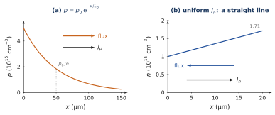
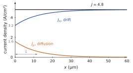
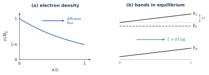
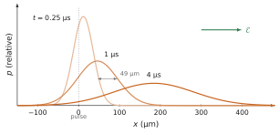
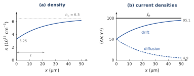

The current density J=qnv; the Drude model, vd=qτcE/m∗ and μ=qτc/m∗; the thermal velocity; the diffusion flux −Ddn/dx; the Einstein relation D=μkT/q; the total currents Jn=qμnnE+qDndn/dx and Jp=qμppE−qDpdp/dx; the continuity equation without generation or recombination.
Data
Silicon electrons: conductivity effective mass m∗=0.26m0. kT/q=25.9 mV at 300 K. Other data from the data sheet at the front.
Problem 1.1From a drift velocity to a collision timeB · Guided calculation
Adapted from Neamen, Problem 5.10, p. 185
A voltage of 3 V is applied across a semiconductor bar 1 cm long. The electrons acquire an average drift velocity of 104 cm/s.
What is the field in the bar, assumed uniform? Deduce the electron mobility.
With the Drude relation μ=qτc/m∗, find the mean time between collisions, taking m∗=0.26m0.
In another material the electron mobility is 800 cm²/(V·s). What drift velocity does the same voltage produce? By what factor is τc shorter, for the same m∗?
Random flights between collisions, with a small net drift of the electrons against the field.Hint
Convert the mobility to m²/(V·s) before using τc=μm∗/q in SI units.
(a) In a uniform bar the field is the voltage divided by the length, E=3/1=3 V/cm. The mobility is the drift velocity per unit field: μ=vd/E=104/3=3.3×103 cm²/(V·s).
(b) μ=3.33×103 cm²/(V·s) =0.333 m²/(V·s). Then τc=μm∗/q=0.333×0.26×9.11×10−31/1.602×10−19=4.9×10−13 s ≈0.5 ps. Between two collisions an electron accelerates for about half a picosecond.
(c) vd=μE=800×3=2.4×103 cm/s. Since τc∝μ at fixed m∗, it is 3333/800=4.2 times shorter: the carriers collide more often and gain less velocity between collisions.
Problem 1.2How much energy does drift give an electron?B · Guided calculation
Adapted from Neamen, Problem 5.20, p. 186
Electrons in silicon at 300 K have μn=1350 cm²/(V·s) and m∗=0.26m0. The Drude model assumes that the field only adds a small drift to a fast random thermal motion.
Compute the drift velocity and the kinetic energy of the drift motion, 21m∗vd2, for E=10 V/cm and for E=1 kV/cm.
Compute the thermal velocity vth=3kT/m∗ and the mean thermal kinetic energy 23kT.
Compare. Up to what order of magnitude of field can the assumption of the Drude model, vd≪vth, be considered safe?
Hint
Work in SI units and convert the energies to eV by dividing by q.
Show the short answer
(a) 1.35×104 cm/s and 1.3×10−8 eV; 1.35×106 cm/s and 1.3×10−4 eV; (b) 2.3×107 cm/s, 38.8 meV; (c) vd/vth=0.06 at 1 kV/cm: safe up to a few kV/cm.
Show the correction
(a) vd=μnE. At 10 V/cm, vd=1.35×104 cm/s =135 m/s and 21m∗vd2=21×0.26×9.11×10−31×1352=2.16×10−27 J =1.35×10−8 eV. At 1 kV/cm, vd=1.35×106 cm/s, a hundred times larger, and the energy is 104 times larger: 1.35×10−4 eV.
(b) vth=3×1.381×10−23×300/(0.26×9.11×10−31)=2.3×105 m/s =2.3×107 cm/s, and 23kT=1.5×25.9=38.8 meV.
(c) At 10 V/cm the drift is 6×10−4 of the thermal velocity and its energy 3×10−7 of the thermal energy: the field barely perturbs the random motion, exactly as the Drude model assumes. At 1 kV/cm, vd/vth=0.06 and the drift energy is still 3×10−3 of 23kT: the model holds. Since vd grows as E, it reaches a sizeable fraction of vth at some 10 kV/cm; the energy gained between collisions then heats the electrons, the collision time changes, and the drift velocity no longer grows in proportion to the field (velocity saturation, which the course meets again in the collector of Chapter 8). The linear law vd=μE is safe up to a few kV/cm.
Problem 1.3Several kinds of collisionsB · Guided calculation
Adapted from Neamen, Problem 5.24, p. 187
In a semiconductor several scattering mechanisms act at the same time (vibrations of the lattice, ionised impurities, …). Each one, alone, would give a collision time τi and a mobility μi=qτi/m∗.
The mechanisms are independent: in a short time dt, the probability of a collision of type i is dt/τi. Show that the total collision rate is 1/τc=∑i1/τi, and deduce that 1/μ=∑i1/μi (Matthiessen’s rule).
Three mechanisms alone would give 2000, 1500 and 500 cm²/(V·s). What is the mobility? Which mechanism controls it?
Two mechanisms alone would give 250 and 500 cm²/(V·s) (Sze & Lee, Ch. 2, Problem 3, p. 79). What is the mobility?
Hint
Probabilities of independent, rare events in the same short interval add.
Show the short answer
(b) 316 cm²/(V·s), controlled by the 500 cm²/(V·s) mechanism; (c) 167 cm²/(V·s).
Show the correction
(a) In dt, a collision of type i occurs with probability dt/τi. For a short interval these events are rare and independent, so the probability that some collision occurs is the sum, dt∑i1/τi. By definition this is dt/τc: 1/τc=∑i1/τi. With μ=qτc/m∗ and μi=qτi/m∗, dividing by q/m∗ gives 1/μ=∑i1/μi: the collision rates add, so the inverse mobilities add.
(b) 1/μ=1/2000+1/1500+1/500=(0.5+0.667+2.0)×10−3=3.17×10−3, so μ=316 cm²/(V·s). The result is below the smallest of the three: the mechanism that, alone, gives 500 cm²/(V·s) is the most frequent collision and controls the mobility.
(c) 1/μ=1/250+1/500=6×10−3: μ=167 cm²/(V·s).
Problem 1.4Mobility, diffusion and temperatureB · Guided calculation
Adapted from Neamen, Problem 5.25, p. 187
The electron mobility of a silicon sample is 1300 cm²/(V·s) at 300 K. It is limited by the vibrations of the lattice, and then varies as T−3/2.
Explain in one sentence, with the Drude picture, why the mobility falls when the temperature rises.
Compute the mobility at 200 K and at 400 K.
Compute the diffusion coefficient at 200, 300 and 400 K with the Einstein relation. How does D vary with T?
(c) D=μkT/q: at 200 K, 2390×0.01727=41.2 cm²/s; at 300 K, 1300×0.0259=33.7 cm²/s; at 400 K, 844×0.03453=29.2 cm²/s. Since μ∝T−3/2 and kT/q∝T, D∝T−1/2: it falls, but more slowly than the mobility, because faster thermal motion partly makes up for the shorter flights.
Problem 1.5Two diffusion currentsB · Guided calculation
Adapted from Neamen, Problems 5.31 and 5.34, p. 188
Use Dp=12 cm²/s and Dn=35 cm²/s.
The hole density in a silicon sample is p(x)=5×1015e−x/Lpcm−3 for x≥0, with Lp=50 µm. Compute the hole flux and the hole diffusion current density at x=0 and at x=Lp. In which direction do the holes move, and in which direction does the current flow?
The electron diffusion current density in another sample is uniform, Jn=2 A/cm², and n(0)=1015cm−3. What is the shape of n(x)? Compute n at x=20 µm. Do the electrons move towards +x or −x?
In (a) the current varies with x, in (b) it does not. Using the continuity equation, say what would happen to the hole density in case (a) if nothing else acted on the holes. (Chapter 4 adds the missing process.)
Hint
Flux Φ=−Ddn/dx; current of holes qΦp, of electrons −qΦn.
Show the short answer
(a) Jp(0)=1.92 A/cm², Jp(Lp)=0.71 A/cm², both towards +x; (b) linear, n(20μm)=1.71×1015cm−3, electrons move towards −x.
Show the correction
(a) dp/dx=−(p0/Lp)e−x/Lp, so the flux Φp=−Dpdp/dx=(Dpp0/Lp)e−x/Lp is positive: holes move towards +x, down the gradient. At x=0, Φp=12×5×1015/5×10−3=1.2×1019 cm−2s−1, and Jp=qΦp=1.92 A/cm². At x=Lp both are divided by e: Jp=0.71 A/cm². For holes, current and flux have the same direction, +x.
(b) Jn=−qΦn=qDndn/dx. A uniform Jn means a uniform slope: n(x) is a straight line, n(x)=n(0)+Jnx/(qDn). The slope is 2/(1.602×10−19×35)=3.57×1017 cm−4, and n(20μm)=1015+3.57×1017×2×10−3=1.71×1015cm−3. The density increases with x, so the electrons diffuse towards −x; the current flows towards +x, opposite to the electron flow.
(c) The continuity equation without generation or recombination reads ∂p/∂t=−∂Φp/∂x. In (a) the flux decreases with x: each slice receives more holes on its left than it loses on its right, so p would increase everywhere and the profile could not be stationary. A stationary exponential profile requires a process that removes holes in each slice at the rate −∂Φp/∂x; this is recombination, introduced in Chapter 4, and Lp is the diffusion length defined there. In (b) the flux is uniform and the linear profile is stationary without any such process.

(a) Holes diffuse down the gradient, and their current has the same direction. (b) A uniform current needs a uniform slope; electrons flow towards −x, the current towards +x.
Problem 1.6Drift and diffusion share one currentB · Guided calculation
Adapted from Sze & Lee, Ch. 2, Problem 16, p. 80
In a silicon sample the total current density is constant, J=4.8 A/cm², and is the sum of an electron drift current and a hole diffusion current. The electron density is uniform, n=1016cm−3, and the holes have p(x)=1015e−x/Lcm−3 for x≥0, with L=12 µm. Take μn=1350 cm²/(V·s) and Dp=12 cm²/s.
Compute the hole diffusion current density Jp(x).
Deduce the electron current density Jn(x).
Deduce the field E(x) and its values at x=0 and far from the origin. Why can the electron diffusion current and the hole drift current be neglected?
Hint
The total current is the same at every x; what one carrier loses, the other gains.
(a) Jp=−qDpdp/dx=qDpp(0)e−x/L/L=1.602×10−19×12×1015/1.2×10−3e−x/L=1.60e−x/L A/cm², towards +x.
(b) Jn(x)=J−Jp(x)=4.8−1.60e−x/L A/cm²: 3.2 A/cm² at x=0, rising to 4.8 A/cm² far away, where the holes have disappeared.
(c) The electron current is a drift current, Jn=qμnnE, with qμnn=1.602×10−19×1350×1016=2.16 S/cm. Hence E(x)=(4.8−1.60e−x/L)/2.16 V/cm: 1.48 V/cm at x=0 and 2.22 V/cm far away. The electron density is uniform, so there is no electron diffusion current. The hole drift current, qμppE≤1.602×10−19×460×1015×2.2=0.16 A/cm², is ten times smaller than the hole diffusion current; neglecting it is the approximation the problem makes.

The total current is constant: the electron drift current takes over from the hole diffusion current over a few L.
Problem 1.7A field without a currentB · Guided calculation
Adapted from Neamen, Problem 5.40, p. 189
An n-type sample is in thermal equilibrium, with no current. Its electron density follows the donors, n(x)=N0e−x/L for 0≤x≤L, with N0=1016cm−3 and L=10 µm.
In equilibrium Jn=0. Write Jn as the sum of its drift and diffusion terms and show, with the Einstein relation, that E(x)=−qkTn1dxdn.
Compute E for the exponential profile. In which direction does it point, and why must it point that way?
Compute the potential difference between x=0 and x=L. Which end is at the higher potential?
Does a voltmeter connected between the two ends read this voltage? Answer with an argument about equilibrium.
Hint
The field must push the electrons back up the gradient, against diffusion.
(a) Jn=qμnnE+qDndn/dx=0, so E=−(Dn/μn)(1/n)dn/dx=−(kT/q)(1/n)dn/dx by the Einstein relation.
(b) (1/n)dn/dx=−1/L, so E=kT/(qL)=0.0259/10−3=25.9 V/cm, uniform and pointing towards +x. The electrons diffuse towards +x, down the gradient; to cancel this flux the field must push them towards −x, and since electrons move against the field, the field points towards +x.
(c) V(0)−V(L)=∫0LEdx=EL=kT/q=25.9 mV, with x=0 at the higher potential. More generally V(0)−V(L)=(kT/q)ln[n(0)/n(L)], here lne=1.
(d) No. The sample is in equilibrium: if a voltmeter could draw a current from this voltage, the sample would deliver energy indefinitely without any source. The internal potential difference is compensated by the contact potentials at the two ends, where the leads meet the semiconductor, and the sum around the closed circuit is zero. The same argument returns in Chapter 5 for the built-in voltage of the junction.

In equilibrium the Fermi level is flat; the bands tilt by kT over L, and the field holds the electrons back against diffusion.
Problem 1.8A spreading packet of carriersC · Synthesis
Adapted from Neamen, Problem 6.28, p. 237
A short pulse of light creates, at t=0, a thin sheet of Ns holes per cm² at x=0 in a silicon bar. Ignore recombination (the time scale is short) and, at first, any field.
Combine the continuity equation without generation or recombination and the diffusion flux to obtain the diffusion equation ∂p/∂t=Dp∂2p/∂x2.
Show that p(x,t)=4πDptNsexp(−4Dptx2) is a solution, and that ∫−∞+∞pdx=Ns at all times. What does the second result express?
The width of the packet is measured by its standard deviation 2Dpt. Compute it after 1 µs.
A field of 10 V/cm is now applied along +x. Where is the centre of the packet after 1 µs? Compare the drift distance with the width. Show that their ratio is kT/qE2Dpt, and explain why measuring the arrival time and the width of the packet at a second contact gives both μp and Dp (the principle of the Haynes–Shockley experiment, Neamen, Problem 6.27, p. 237).
Hint
In (b), write p=At−1/2e−x2/4Dpt and differentiate. For the integral, use ∫−∞+∞e−ax2dx=π/a.
Show the short answer
(c) 49 µm; (d) 46 µm along +x, comparable to the width.
Show the correction
(a) Continuity: ∂p/∂t=−∂Φp/∂x; Fick: Φp=−Dp∂p/∂x. With Dp uniform, ∂p/∂t=Dp∂2p/∂x2.
(b) Let A=Ns(4πDp)−1/2, so p=At−1/2e−x2/4Dpt. Then ∂p/∂t=p[−1/(2t)+x2/(4Dpt2)]; ∂p/∂x=−px/(2Dpt); ∂2p/∂x2=p[x2/(4Dp2t2)−1/(2Dpt)]. Multiplying the last one by Dp gives the first one: the equation is satisfied. With a=1/(4Dpt), ∫e−x2/4Dptdx=4πDpt, so ∫pdx=Ns. The number of holes is conserved: without recombination diffusion only spreads them out.
(c) 2Dpt=2×12×10−6=4.9×10−3 cm =49 µm.
(d) With a field, the whole packet drifts at vd=μpE while it spreads (the solution is the same function of x−vdt). After 1 µs the centre is at μpEt=460×10×10−6=4.6×10−3 cm =46 µm, about the width of the packet. The ratio is μpEt/2Dpt; with μp=Dp/(kT/q) it becomes kT/qE2DptDpt=kT/qE2Dpt. At a second contact at distance d, the arrival time td of the peak gives μp=d/(Etd), and the duration of the pulse seen there gives its width 2Dptd, hence Dp. Measuring both checks the Einstein relation directly.

The packet drifts at μpE and spreads as 2Dpt; its area stays Ns.
Problem 1.9Drift in a household cableB · Guided calculation
From the course notes, Chapter 1
A copper conductor of 2.5 mm² carries 10 A. Find the drift velocity and the time an electron takes to travel 1 m. Why does a lamp light up as soon as the switch is closed?
Show the short answer
J=10/2.5×10−6=4×106 A/m²; vd=J/(en)=2.9×10−4 m/s; 1 m takes 3.4×103 s, about an hour. The lamp lights at once because the field is established along the whole circuit almost at the speed of light, and all the electrons start drifting together; no electron has to travel from the switch to the lamp.
Problem 1.10AluminiumB · Guided calculation
From the course notes, Chapter 1
Aluminium has σ=3.77×107 S/m and three free electrons per atom, n=1.81×1029 m−3. Find τc and μ, and compare with copper.
Show the short answer
τc=σm/(ne2)=3.77×107×9.11×10−31/(1.81×1029×2.57×10−38)=7.4×10−15 s; μ=eτc/m=1.3×10−3 m²/(V·s) =13 cm²/(V·s). More electrons than copper, but three times shorter flights: a slightly lower conductivity.
Problem 1.11A real wireB · Guided calculation
From the course notes, Chapter 1
Find the resistance of 100 m of copper wire of 1.5 mm², and the field inside the copper when it carries 10 A.
Problem 1.12Thermal velocitiesB · Guided calculation
From the course notes, Chapter 1
Compute vth for an electron at 77 K and 300 K, and for a sodium ion Na+ (m=3.82×10−26 kg) at 300 K.
Show the short answer
Electron: vth=3kT/m=5.9×104 m/s at 77 K, 1.2×105 m/s at 300 K. Na+: 3×1.381×10−23×300/3.82×10−26=570 m/s: the heavier the carrier, the slower its thermal motion.
Problem 1.13A diffusion currentB · Guided calculation
From the course notes, Chapter 1
In silicon, the electron concentration falls linearly from 1016 cm−3 to zero over 10 µm; Dn=35 cm²/s. Find the electron flux and the current density, with their directions.
Show the short answer
dn/dx=−1016/10−3=−1019 cm−4. Flux Φ=−Ddn/dx=3.5×1020 cm−2 s−1, towards +x (down the gradient). Current J=qΦ=−eΦ=−56 A/cm²: towards −x, opposite to the electron flow.
Problem 1.14EinsteinB · Guided calculation
From the course notes, Chapter 1
Holes in silicon have μp=460 cm²/(V·s). Find Dp at 300 K. Na+ in water has μ=5.19×10−8 m²/(V·s); find its D (measured: 1.33×10−9 m²/s).
Show the short answer
Dp=μpkT/e=460×0.0259=11.9 cm²/s. Na+: D=5.19×10−8×0.0259=1.34×10−9 m²/s, in agreement with the measurement: the Einstein relation also holds for ions in a liquid.
Problem 1.15CopperB · Guided calculation
From the course notes, Chapter 1
Compute the plasma frequency ωp of copper (with ε=ε0), its period, ωpτc and τd=ε0/σ. Check the identity ωp2τcτd=1. Which regime?
Show the short answer
ωp=8.5×1028×(1.602×10−19)2/(8.854×10−12×9.11×10−31)=1.64×1016 rad/s, period 2π/ωp=0.38 fs. ωpτc=1.64×1016×2.5×10−14≈410. τd=8.854×10−12/5.96×107=1.5×10−19 s. ωp2τcτd=2.7×1032×2.5×10−14×1.5×10−19≈1.0. Strongly underdamped: a plasma oscillation, gone in a few τc (∼100 fs).
Problem 1.16Silicon at 1016 cm−3B · Guided calculation
From the course notes, Chapter 1
Electrons with m∗=0.26m0, μ=1350 cm²/(V·s), εr=11.7. Find τc, σ, τd and ωpτc. Which regime?
Show the short answer
τc=μm∗/e=0.135×2.37×10−31/1.602×10−19=2.0×10−13 s; σ=neμ=1022×1.602×10−19×0.135=216 S/m; τd=11.7×8.854×10−12/216=4.8×10−13 s; ωpτc=τc/τd=0.65: just above the critical value 1/2, a weakly damped oscillation.
Problem 1.17The slow rootB · Guided calculation
From the course notes, Chapter 1
For ωpτc≪1/2, expand the roots of r2+r/τc+ωp2=0 to show that r1≃−1/τc and r2≃−1/τd.
Show the short answer
r=−2τc1[1∓1−4ωp2τc2]. With 1−u≃1−u/2 for u=4ωp2τc2≪1: the minus sign gives r2≃−2τc1⋅2ωp2τc2=−ωp2τc=−1/τd by the identity ωp2τcτd=1; the plus sign gives r1≃−1/τc.
Problem 1.18Dielectric relaxationB · Guided calculation
From the course notes, Chapter 1
Compute τd for sea water (σ=5 S/m, εr=80) and for pure water (σ=5.5×10−6 S/m). Is the local Ohm’s law justified in these cases (ionic collision times are below 10−13 s)?
Show the short answer
Sea water: τd=80×8.85×10−12/5=1.4×10−10 s. Pure water: 7.1×10−10/5.5×10−6=1.3×10−4 s. Both are much longer than the ionic collision times (ωpτc≪1/2), so Ohm’s law and the RC law (1.23) are valid there, unlike in a metal.
Challenge: a new situation
These problems apply the method of the chapter to a device, a material or a situation that the chapter did not treat. The reasoning does not change: state the physical picture, choose the model, compute, check.
Problem 1.19Drift and diffusion in gallium arsenideC · Synthesis
Adapted from Neamen, Problem 5.37, p. 189
A uniform field E=12 V/cm along +x exists in n-type GaAs between x=0 and x=50 µm, at 300 K. The total electron current density is constant, Jn=100 A/cm², and at x=0 the drift and diffusion currents are equal. Take μn=8000 cm²/(V·s).
Find Dn, and write the equation Jn=qμnnE+qDndn/dx as a first-order differential equation for n(x).
Solve it with the condition at x=0. What length characterises the variation of n, and what is its physical meaning?
Compute n(0) and n(50μm), and the drift and diffusion currents at x=50 µm.
Hint
The equation has a constant particular solution, for which the whole current is drift.
Show the short answer
(a) Dn=207 cm²/s; (b) n(x)=n∞(1−21e−x/ℓ) with n∞=6.50×1015cm−3 and ℓ=kT/(qE)=21.6 µm; (c) 3.25×1015 and 6.18×1015cm−3; 95.1 and 4.9 A/cm².
Show the correction
(a) Dn=μnkT/q=8000×0.0259=207 cm²/s. Dividing by qDn: dn/dx+n/ℓ=Jn/(qDn), with ℓ=Dn/(μnE)=(kT/q)/E=0.0259/12=2.16×10−3 cm =21.6 µm.
(b) The constant solution n∞=Jn/(qμnE)=100/(1.602×10−19×8000×12)=6.50×1015cm−3 carries the whole current by drift. The general solution is n=n∞+Ae−x/ℓ. At x=0, drift = diffusion =Jn/2, so qμnn(0)E=Jn/2 and n(0)=n∞/2: A=−n∞/2, and n(x)=n∞(1−21e−x/ℓ). The length ℓ is the distance over which the potential energy qEℓ equals kT: over shorter distances diffusion competes with drift, over longer ones drift wins.
(c) n(0)=3.25×1015cm−3; at 50 µm, e−50/21.6=0.099 and n=6.50×1015×(1−0.049)=6.18×1015cm−3. Drift: qμnnE=1.602×10−19×8000×6.18×1015×12=95.1 A/cm²; diffusion: 100−95.1=4.9 A/cm². Check: qDndn/dx=qDnn∞e−x/ℓ/(2ℓ)=4.9 A/cm².

The density approaches n∞ over the length ℓ=kT/qE; diffusion hands the current over to drift.